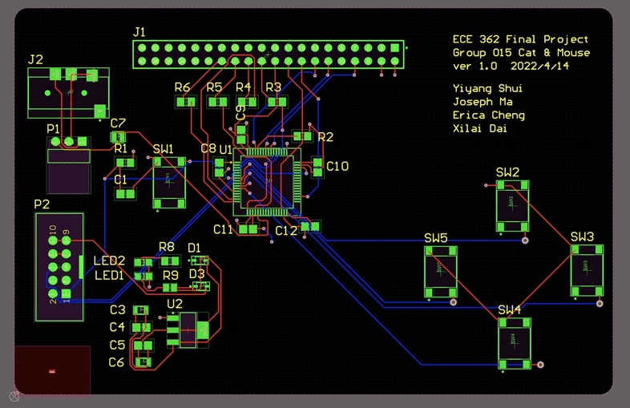
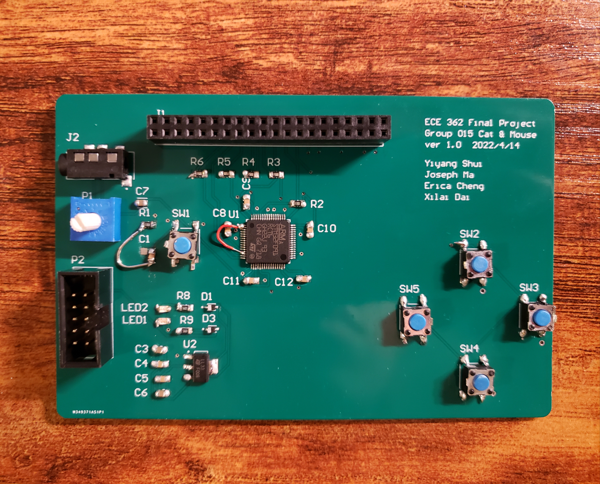

The game involves a cat which is programmed to be an "AI" with the ability to move autonomously and automatically to chase the mouse (controlled by the user through push buttons). The Cat & Mouse game was prototyped on a breadboard and finalized on a hand-held PCB assembly. Background music was played through an audio jack and the display screen was designed to be a selective menu with touch screen.
An STM32F091RCT6 ARM microcontroller with 256 KB Flash memory and 32KB SRAM was used to program the game. SPI (Serial Peripheral Interface) was used to send data between the microcontroller and LCD display. The type of touch screen used was a 3.2" ILI9341 TFT LCD with breakout board from Adafruit, which had a display of 320*240 resolution. It had a four-wire resistive touchscreen and we wrote a simple driver for it to detect single touch locations. DAC (Digital to Analog converter) was used to convert and generate music. ADC (Analog to Digital converter) was used to communicate the touch screen data. Timers and interrupts were used to listen and respond to any instructions depending on what the user was doing (e.g. pressing a button in the menu). GPIO was used to receive input from push buttons.
Click here to view the source code. Most of the algorithm can be found in ece362_finalproj/src/support.c.